Trang chủ
Trang chủ- Thư pháp Việt - những khái niệm cơ bản
- Lịch sử ra đời của bút lông
Như chúng ta đã biết, người dân Việt với lòng tự hào và yêu mến những truyền thống văn hóa dân tộc rất cao. Qua hàng nghìn năm đô hộ giặc Tầu, và trăm năm đô hộ giặc Tây... như lời thống kê của cố nhạc sĩ Trịnh Công Sơn nhưng vẫn giữ được bản sắc riêng của dân tộc Việt Nam cũng như sự cộng hưởng của các nền văn hóa khác thật đậm nét. Như những phong tục tập quán, và nếp sống của dân Việt... bị ảnh hưởng bởi nền văn hóa Trung Hoa qua quá trình một nghìn năm thống trị. Cũng như kiến trúc nhà cửa cũng lai theo Tây phương không ít. Mặc dù thế dân tộc Việt Nam dù hòa nhập chứ không bao giờ hòa tan vào bất kỳ nền văn hóa nào. Chúng ta biết học hỏi cái hay của các nền văn hóa khác trở thành cái riêng và độc đáo của mình.
Điểm thay đổi đáng kể nhất có thể nhắc tới là hệ thống chữ Hán Nôm được thay bằng hệ thống chữ quốc ngữ sử dụng các ký tự Latinh do các linh mục người Pháp truyền bá. Với hai mươi bốn chữ cái và các dấu sắc huyền hỏi ngã nặng, đơn giản và mang tính phổ thông rất nhiều so với hệ thống chữ Hán Nôm vốn khó học và hầu hết chỉ có những giai cấp quan lại trí thức mới đọc và viết được. Nên ngày nay mấy ai đọc và viết được chữ Hán Nôm nữa.
Những ngừơi yêu văn yêu chữ, tôn thờ đạo nghĩa không để con chữ chỉ dừng lại ở chức năng duy trì và truyền bá thông tin...mà nâng nó lên một bậc giá trị tầm cỡ hơn trở thành một nghệ thuật sống động và mang tính chất tâm linh sâu sắc. Đó là nghệ thuật thư pháp. Nghệ thuật này được biết đến tại Việt Nam rõ nét nhất là hình ảnh những ông đồ già bên phố cùng những nét rồng bay uốn lượn.
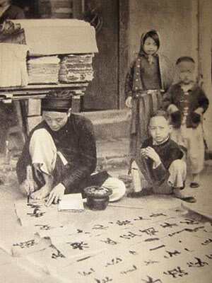
Như nhà thơ Vũ Đình Liên đã viết:
Nhưng mỗi năm mỗi vắng
Người thuê viết nay đâu
Giấy đỏ buồn không thắm
Mực đọng trong nghiêng sầu...
Theo dòng phát triển, và biến cố lớn của đất nước, người dân phải lo thích nghi cho một cuộc sống mới. Và cũng ít đi những người biết đọc và hiểu được chữ Hán Nôm huống chi là thưởng thức nghệ thuật thư pháp.
Năm nay hoa đào nở
Chẳng thấy ông đồ xưa
Những người muôn năm cũ
Hồn ở đâu bây giờ.
Một khoảng thời gian khá dài, người ta đã không còn thấy hình ảnh ông đồ già bên phố xuân như ngày nào nữa. Nhưng hôm nay, thế hệ con cháu rồng tiên không thể để mai một đi những truyền thống vốn cao đẹp đó. Nối bước theo nhà thơ Đông Hồ (được xem là ông tổ của nghành thư pháp Việt Nam) đã dùng cọ lông và mực Tầu đễ tạo nên linh hồn của những con chữ nhưng không phải chữ Hán hay Nôm mà là chữ quốc ngữ ngày nay. và được gọi là THƯ PHÁP VIỆT.
Vốn dựa trên những nguyên tắc của thư pháp Hán để áp dụng cho thư pháp Việt mặc dù hai cấu trúc chữ Hán và Việt này hòan tòan khác nhau cho nên việc áp dụng như vậy có vẽ khập khiễng. Những người chơi thư pháp Việt tới nay cũng chỉ viết theo cảm tính và tự phát. mỗi người tự tìm cho mình một đường lối thiếu bài bản và không thống nhất.
Qua bao nhiêu năm phát triển nền thư pháp Việt ngày nay đã bắt đầu nên hình nên vóc, vậy tại sao chúng ta không tự thống nhất và đưa ra những khái niệm và nguyên tắc riêng cho thư pháp Việt?
Định nghĩa: Thư pháp Việt là một lọai hình nghệ thuật chữ viết, sử dụng các ký tự Latinh với phương tiện cọ lông và mực Tầu để thể hiện.
Được chia ra là hai lối viết chính: Lối trúc và lối Mai
LỐI TRÚC: là lối viết mạnh mẽ rắn chắc các nét được viết to, mang thần sắc vốn dĩ của thư pháp Hán nhưng cũng không kém phần mềm mại uyển chuyển.
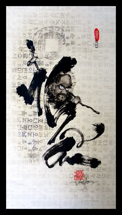
LỐI MAI: các nét chữ được viết mảnh mai từng nét chữ mềm mại thích hợp với cấu trúc của các ký tự Latinh đa số là những nét cong uốn lượng chứ không góc cạnh như chữ Hán.
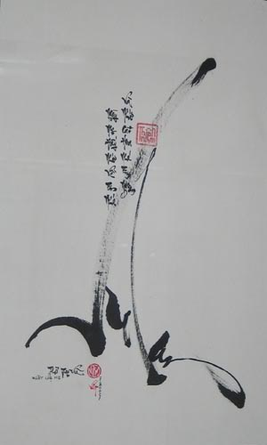Có người sử dụng cả hai lối này vào trong một tác phẩm, Lối Trúc được dùng cho chữ đại tự và lối Mai được dùng cho câu văn viết kèm.
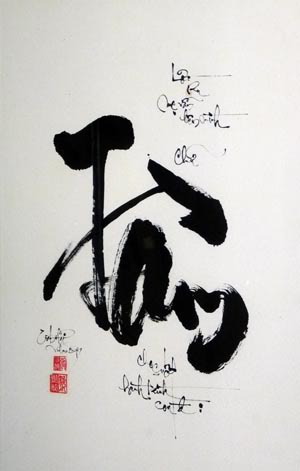Mỗi thư pháp gia có mỗi phong cánh và nét chữ hòan tòan khác nhau, mỗi người một vẻ. Nhưng được chia vào các thể chính như sau: Điền , Họa , Thủy , Mộc , Phong , Dị .
ĐIỀN THỂ: là lối viết chữ Việt được xắp sếp thành từng khối vuông hay tròn, được ưa chuộng và khắc trạm trên các bức phù điêu... thường dùng cho những câu đối trong đền chùa...
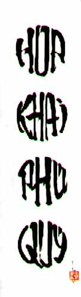HỌA THỂ: là một nghệ thuật viết chữ khéo léo có sắp xếp tính tóan sao cho từng đường nét chữ phối hợp thành những hình dạng mang ý nghĩa nhất định.
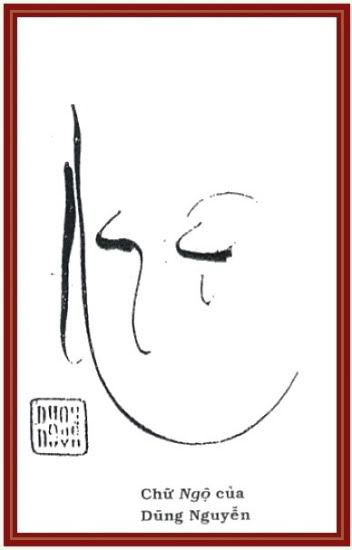THỦY THỂ: là lối viết chữ nhái theo lối viết chữ Hán, chữ viết không ngang hàng mà được viết dọc xuống như nứơc đổ.
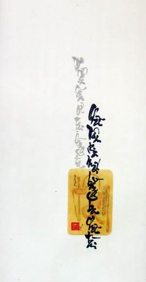MỘC THỂ: là lối viết mộc mạc giản dị ngay hàng thẳng lối dễ đọc và dễ cảm nhận nhưng không kém phần bay bướm. Lối này được nhiều người ưa thích và thể hiện.
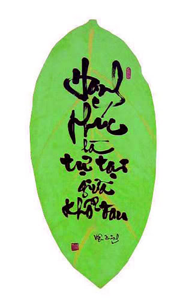PHONG THỂ: là lối chữ viết nhanh trôi chảy. Khi đặt bút xuống là như một cơn bão quét qua không phút ngập ngừng. Nét chữ tuôn ra theo cảm hứng và quán tính vì thế đôi khi nét chữ không hòan chỉnh và hơi khó đọc nhưng vẫn dễ đọc hơn Dị thể.
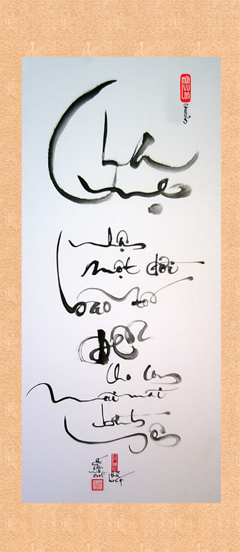DỊ THỂ: là lối viết chữ cá tính ngọn bút xuất phát từ cảm hứng cao độ, đường nét không theo chuẩn mực mà phóng bút tự do. Nét chữ không rõ ràng mà chỉ mang dáng dấp chính của con chữ, người thưởng ngoạn đôi khi cũng phải đóan để hiểu được nội dung.
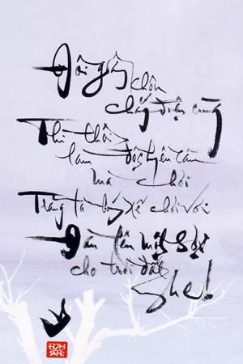-Có Hai thể chữ cũng nên nói tới
THỂ LONG PHỤNG: là dạng chữ rong được viết bằng một bản gỗ nhỏ có răng cưa. Mỗi chữ được viết vẽ kèm theo những hình ảnh lạ mắt như rồng phụng hoặc các ông Phúc Lộc Thọ...

THỂ ÂM DƯƠNG: là dạng chữ ngược, nhìn vào trông như chữ Hán, muốn đọc thì phải quen lối viết và tưởng tượng ngựơc lại, hoặc nhìn ngược từ mặt sau tờ giấy không thì nhìn vào hình ảnh phản chiếu từ một tấm gương.
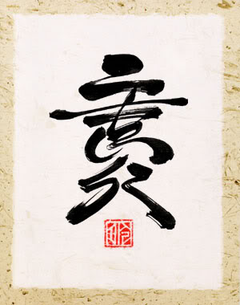 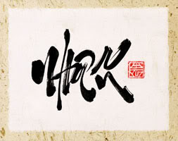Trong ngàn vạn loại bút, bút lông được coi là sản phẩm duy nhất của... xem thêm...
 Trang chủ
Trang chủ You Tube
You Tube Facebook
Facebook Twitter
Twitter